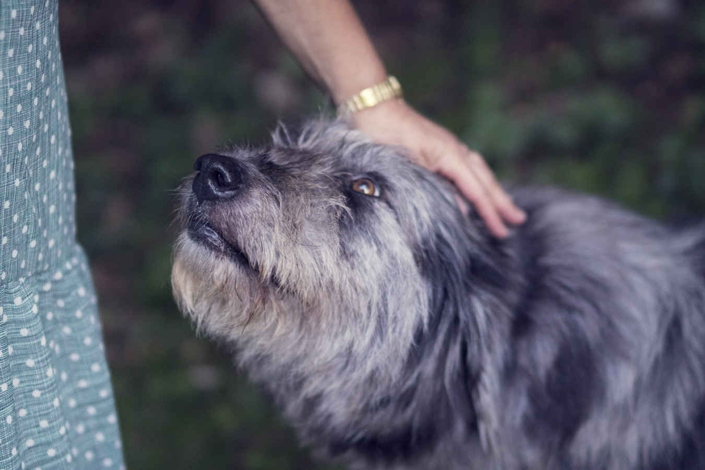
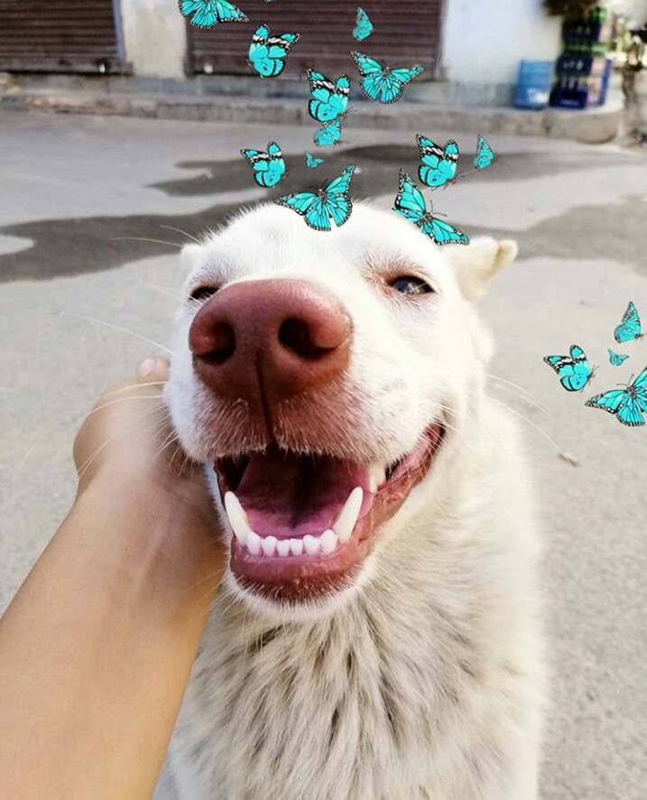

Share your stories
-

Kanchi's Rescue story
Adopting directly from a pet owner who needs to find a new home for their pet can be just as rewarding though. Through our platform Pet nepal , current pet owners who can no longer keep their dog or cat can create a profile and share photos and information about their pet. “We had lost our dog about a month ago after a long illness. After having her for 11 years, we really wanted another dog,”
-
How to Get a Cat into a Carrier
Safe pet travel is an essential part of being a responsible pet owner. Whether you need to take your kitten to the veterinarian or you’re going on a vacation with your feline friend, eventually, your cat will need to be placed in a carrier. What seems to be a simple process may actually be quite complicated depending on your cat’s behavior or mood. Naturally, cats are particular when it comes to their space. Regardless, if you’re a new kitten owner or a seasoned cat owner, figuring out how to get a cat into a carrier is a specialized skill in itself.

-
Unlikely friendship between simon and sophie
Little kitty is a rescue. my neighbors found her eating garbage out of their truck last Friday, and well, they're not pet people. They thought of us at 10 pm at night and brought her over to my house, starving, full of fleas, and VERY mouthy and yelling about how put out she was about this situation! At least we have plenty of cat food here, and she was much happier once her tummy was full and she had a warm place to sleep for the night.
How to take care of a rescue dog
Adopting a dog in need of a home is a big decision that comes with many rewards and a few new responsibilities. Are you adding to your family this year? Before you run out to pick out a new friend and bring them home, here are a few things to do - and not to do - right away.